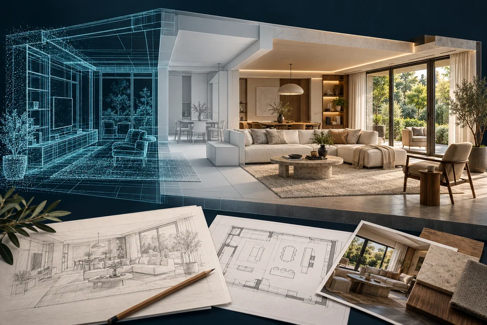

01 / DISEGNO 2D
Disegnare con precisione
Le basi per creare e gestire un disegno ordinato.
- Coordinate, snap e comandi
- Layer, blocchi, retini e riferimenti
- Piante, prospetti, sezioni e dettagli
“Andrea è molto professionale, preparato e mette a proprio agio durante la lezione. Super consigliato!!! :)”
1 persona, 1 percorsoObiettivi e ritmo scelti insieme
Tu disegni, io ti seguoCondivisione schermo e pratica
Dal primo comando al progettoPer studenti e professionisti
IL VANTAGGIO DI UNA LEZIONE INDIVIDUALE
Un percorso personalizzato parte da quello che sai già e da ciò che vuoi ottenere. Possiamo riprendere le basi, risolvere un dubbio o migliorare una tavola che stai preparando.
Durante la videoconferenza condividi lo schermo, provi i comandi e correggiamo insieme gli errori. Il ritmo si adatta a te.
Mi racconti il tuo livello, cosa studi o su quale problema vuoi lavorare.
Spiegazione, esercizio e feedback: ogni passaggio ha un’applicazione concreta.
Ripeti il procedimento e lo applichi a un caso diverso, fino a comprenderlo.
IL PROGRAMMA SI ADATTA A TE
Scegliamo gli argomenti utili per il tuo livello. Puoi seguire un corso progressivo oppure concentrarti su un’esigenza precisa.
01 / DISEGNO 2D
Le basi per creare e gestire un disegno ordinato.
02 / LAYOUT E STAMPA
Dal file DWG a elaborati leggibili e impaginati.
03 / MODELLAZIONE 3D
Dalla rappresentazione piana ai volumi.
Gli esercizi vengono scelti in base al tuo percorso.
DA DOVE PARTI?
Prendi confidenza con l’interfaccia, i comandi e un metodo semplice da seguire.
Ripetizioni per CAT, istituti tecnici, architettura e ingegneria, seguendo il programma del docente.
Lezioni per geometri, architetti e ingegneri: organizzazione DWG, precisione e problemi reali.
UN INIZIO SEMPLICE, UN PREZZO CHIARO
Nei 30 minuti gratuiti definiamo insieme da dove partire:
Durata e frequenza delle lezioni successive si concordano insieme.
Online, senza impegno.
Lezioni, corsi e ripetizioni
personalizzati AutoCAD 2D e 3D.
La tariffa riguarda le lezioni. Licenza AutoCAD e costi degli esami ufficiali non sono inclusi.
IL DISEGNO È IL PUNTO DI PARTENZA
Nelle lezioni lavoriamo sul disegno 2D e sulla modellazione 3D in AutoCAD. Il render illustra un possibile sviluppo successivo del progetto.
ESPERIENZE DI CHI HA IMPARATO CON ME
Andrea è un insegnante con molta pazienza, chiaro nelle spiegazioni e sempre orientato alla pratica. Ha saputo adattare la lezione alle mie esigenze concrete. Mi ha spiegato molti esempi pratici e trucchi utili per velocizzare il disegno.
Vincenzo G. · Lezioni AutoCADAndrea è molto professionale, preparato e mette a proprio agio durante la lezione. Super consigliato!!! :)
Lucia C. · Lezioni AutoCADAndrea è un bravo insegnante, chiaro, semplice e passo passo ti aiuta a comprendere come usare i comandi e le scorciatoie più semplici. Ha anche tanta pazienza.
Michela F. · Ripetizioni AutoCADIl suo insegnamento è chiaro e diretto.. veramente ho visto notevoli miglioramenti.
Dino P. · Corso AutoCADMi ha aiutato tanto con le ripetizioni di AutoCAD e sono migliorato nel rendimento e nelle verifiche.
Loris C. · Ripetizioni scolasticheMi ha aiutato a capire le coordinate polari e cartesiane, molto bravo e chiaro.
Hassan Y. · Lezioni AutoCADSe pubblicata, la recensione apparirà con il nome e la sola iniziale del cognome: Nome C.
Sono lezioni individuali dal vivo, con condivisione dello schermo, esercizi e correzioni sul tuo lavoro. Puoi iniziare da zero o chiedere una singola ripetizione: il percorso segue il tuo obiettivo.
I primi 30 minuti sono gratuiti: valutiamo il livello, definiamo un obiettivo e scegliamo gli argomenti. Le lezioni successive costano 15 €/ora. Giorno e orario si concordano dopo il contatto.
Un computer con AutoCAD installato e regolarmente utilizzabile, connessione stabile, microfono e condivisione dello schermo. È suggerito AutoCAD 2027 italiano; possiamo lavorare anche con altre versioni italiane o inglesi. Per il 3D serve AutoCAD completo: AutoCAD LT ha funzioni diverse.
Sì: partiamo dal programma del docente, dagli esercizi e dalle difficoltà incontrate. La preparazione riguarda metodo e pratica; la lezione non rilascia una certificazione Autodesk e non garantisce l’esito dell’esame.
IL PROSSIMO PASSO È IL TUO
Scrivimi cosa vorresti imparare o quale problema vuoi risolvere. Ti ricontatterò personalmente per concordare i 30 minuti gratuiti.
Bastano nome ed email. I campi con * sono obbligatori.

CAD · BIM · RENDER · INTERIOR DESIGN
Disegni CAD, modelli BIM, render e proposte di interior design su misura per dare forma e valore a ciò che hai in mente.
Parti da ciò che hai: un’idea, uno schizzo, una bozza, foto, disegni, PDF o altri elaborati. Valutiamo insieme il materiale e il risultato che vuoi ottenere.
Scopri i servizi e raccontami la tua ideaPreventivo gratuito e senza impegno · Servizio online